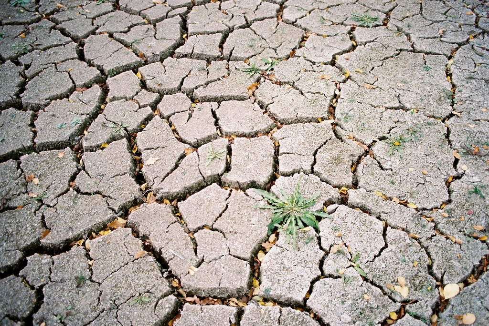

Watering Your Foundation During a Drought: What It Does and How to Do It Right
Yes, watering your foundation during a drought genuinely helps, and on expansive clay soil it is one of the cheapest forms of foundation protection there is. Clay shrinks as it dries, and when the soil around your home dries out faster than the soil under the slab, the edges of the foundation lose support and drop. Keeping the perimeter soil evenly moist keeps it expanded and in contact with the foundation, which slows that edge settlement.
This is standard practice in the clay markets. In Abilene, Texas, long hot summers pull moisture out of expansive clay until it shrinks back from foundations and opens visible gaps, and local guidance there treats soaker-hose watering as routine summer maintenance. Shreveport, Louisiana runs on the same cycle: summer drought shrinks its clay soils, heavy rain re-wets them, and that shrink-swell swing moves slabs year after year. Watering does not fix a foundation that has already settled. It keeps a stable one from starting to move.
This guide covers how the drying actually damages a foundation, how to set up a soaker hose for foundation watering, how often to run it, and the point where watering stops being enough and you need an evaluation instead.
Request a free inspection
Why Dry Clay Pulls Away From Your Foundation
Expansive clay behaves like a sponge with a memory. Wet, it swells and presses up against the foundation. Dry, it contracts, hardens, and shrinks in volume. Around a house, the soil at the perimeter dries first because it is exposed to sun, wind, and thirsty landscaping, while the soil under the middle of the slab stays shaded and holds moisture longer. That uneven drying is the problem: the slab edge loses support while the center keeps it, so the edge settles and the slab bends.
The visible sign is a dry soil foundation gap, a crack of open space between the soil and the foundation wall you can often fit fingers into by late summer. Inside the house, the same movement shows up as summer foundation cracks in drywall, doors that start sticking in July and free up after fall rain, and tile or trim separating at outside walls. In Shreveport, severe spring storms alternate with summer drought, so the swing repeats annually. In Abilene, drought waves are the trigger local repair companies cite for waves of settlement work. Each cycle moves the foundation a little, and the movement does not fully reverse when the rain returns.
Should I water my foundation during a drought?
Yes. On expansive clay, watering your foundation during a drought is a legitimate and widely recommended maintenance practice. The goal is not to soak the ground but to keep soil moisture around the perimeter roughly even with the moisture under the slab, so the clay stays expanded and supporting the foundation edge instead of shrinking away from it.
Why is the soil pulling away from my foundation?
The soil is pulling away because dry expansive clay shrinks in volume as it loses moisture. Perimeter soil dries fastest in summer heat, so it contracts and opens a gap against the foundation while the shaded soil under the slab stays moister and holds its volume. A gap that widens every dry season means the foundation edge is losing support and may start to settle.
How to Set Up a Soaker Hose for Foundation Watering
A soaker hose for foundation watering is a porous hose that weeps water slowly along its length instead of spraying it. Lay it in a loop around the house, roughly 12 to 18 inches out from the foundation wall, following common local practice in Abilene and other Texas clay markets. Too close and you risk saturating the soil right against the wall; too far and the water never reaches the soil the foundation actually sits on. Bury it under a thin layer of mulch if you like, which slows evaporation, but keep the end accessible so you can check it is weeping evenly.
Run it on a schedule rather than by feel. The same Abilene-area guidance suggests about 30 to 45 minutes per session, three to four times a week during dry months, adjusting for rainfall: skip sessions after real rain, add them during long dry, windy stretches. A simple hose timer turns this into a set foundation watering system that runs early in the morning, when less water is lost to evaporation. The target is consistent, moderate moisture, not a swamp. Soil should feel damp a few inches down, never muddy or pooled.
How often should I water my foundation?
How often to water a foundation depends on heat, wind, and rainfall, but a common schedule in Texas clay country is three to four sessions a week in dry months, about 30 to 45 minutes each with a soaker hose placed 12 to 18 inches from the wall. Skip sessions after genuine rain. Consistency matters more than volume in any single session.
Can I use a drip line or sprinkler instead of a soaker hose?
Yes, a drip irrigation line on a timer works the same way and is often neater, and some homeowners have a buried foundation watering system installed for exactly this. Lawn sprinklers are the weakest option because coverage is uneven and they wet the wall and siding. Whatever you use, the water must land in the soil band near the foundation, slowly and evenly, on all sides of the house.
Watering Done Wrong: Too Much, Too Uneven, Too Late
Overwatering is a real failure mode. Keeping one side of the house wetter than the other can swell that side's clay and lift it, which is its own form of movement. The usual culprits are a downspout dumping beside one corner, a flower bed on a daily drip while the rest of the yard bakes, or a leaking irrigation line. Drought foundation protection means even moisture on every side, so walk the perimeter occasionally and check that no single stretch stays soggy while another stays cracked and dry.
A foundation moisture barrier, a sheet or membrane installed vertically in the soil a short distance from the wall, is sometimes sold alongside watering advice. Its job is to slow moisture change in the soil right at the foundation, evening out the wet-dry swing. It can help on problem sides of a house, but it does not replace consistent moisture, and it does nothing for a foundation that has already dropped. Treat it as a supplement recommended after an evaluation, not a first purchase.
Can watering your foundation cause damage?
Yes, if it is uneven or excessive. Flooding one corner while the opposite side stays dry can swell that corner's clay and heave it upward, and chronic overwatering near the wall keeps soil saturated and weak. Keep sessions short, timed, and even on all sides, and fix downspouts or irrigation leaks that soak one spot. The aim is steady moisture, never standing water against the foundation.
Does a foundation moisture barrier replace watering?
No. A foundation moisture barrier slows how quickly soil moisture changes right next to the wall, which can soften the shrink-swell cycle on a problem side of the house. It does not add moisture during a drought, so the clay behind it can still dry and shrink over a long dry season. Most homes on clay do fine with consistent soaker-hose watering alone; barriers are an add-on for specific situations.
When Watering Is Not Enough
Watering is prevention, not repair. If the foundation has already settled, no watering schedule will lift it back, and continuing to water a settled section can mask the problem while cosmetic damage spreads. Signs the movement has passed what watering can manage: cracks that widen each year instead of cycling, doors that stick in every season now, a visible slope in floors, or a soil gap that returns within days of watering because the foundation itself has dropped away from grade.
At that point, get an independent structural engineer before a repair company. An engineer evaluation typically runs about $350 to $600 and tells you whether you need piers, drainage work, or just better moisture management. If piers are required, published pricing puts them at $1,000 to $2,500 each installed, with typical structural repairs landing between $4,000 and $12,000 overall. That is the strongest argument for watering early: a hose and a timer cost very little against a five-figure repair, and prevent foundation damage during drought years while the soil is still doing its job.
I have been watering and the cracks keep growing. What now?
Growing cracks despite consistent watering mean the soil is probably no longer the whole story, and the foundation has likely settled past what moisture management can hold. Stop treating it as a watering problem. Get an independent structural engineer, typically $350 to $600, to measure elevations and say whether piers, drainage changes, or monitoring are warranted before you accept any repair quote.
How much does it cost to fix a foundation that dried out and settled?
Published pricing for pier-based repair runs $1,000 to $2,500 per pier installed, and typical structural repairs total $4,000 to $12,000 depending on how many piers the settled section needs. An engineer evaluation, around $350 to $600, comes first and keeps you from buying piers you do not need. FoundationMatch is a matching service, not a contractor; we connect you with local companies after you know the scope.
Frequently asked questions
What is a good foundation watering schedule in Texas?
A workable foundation watering schedule in Texas clay country is a soaker hose 12 to 18 inches from the wall, run 30 to 45 minutes, three to four times a week during dry months, and paused after real rain. That is the schedule local Abilene guidance commonly cites. Set it on a timer for early morning and check the soil weekly; damp a few inches down is the target.
How do I prevent foundation damage during a drought?
To prevent foundation damage in a drought, keep soil moisture even around the whole house: soaker-hose watering on a timer, gutters and downspouts that discharge away from the wall, and no thirsty landscaping hard against one side. Start before the soil gap opens, because watering works far better at holding moisture than at restoring it. Once clay has shrunk and cracked deeply, recovery takes weeks of steady moisture.
Will watering my foundation close cracks that already appeared?
Sometimes partly. If cracks came from one dry season of clay shrinkage and the foundation has not permanently settled, restoring even moisture can swell the clay back and narrow them. Cracks that stay open after a full season of consistent moisture, or that reopen wider each summer, indicate settlement that watering cannot undo. Those need an engineer evaluation, not a bigger hose.
How far from the house should the soaker hose sit?
Place a soaker hose for foundation watering about 12 to 18 inches out from the foundation wall. Closer risks saturating soil directly against the wall and feeding moisture toward the slab edge unevenly; farther out mostly waters the yard. The band you are hydrating is the soil the foundation bears on, so keep the loop a consistent distance all the way around, including corners.
Does every home on clay soil need foundation watering?
No. Homes where drainage, grading, and landscaping already keep soil moisture steady often show no gap and no seasonal cracks, and adding watering changes nothing. Watering earns its keep where you can see the cycle: soil pulling away in summer, doors moving with the seasons, cracks that breathe. If none of that is happening, monitor through one dry season before buying anything.
Can trees near the house make drought damage worse?
Yes. Large trees pull moisture from the soil within their root zone, and a tree close to the house can dry the clay on that side faster than the rest, tilting the moisture balance watering is trying to hold. You may need longer sessions on the tree side, or root-barrier advice from an arborist. Do not cut watering to the tree; a stressed tree makes the cycle worse.
Related guides
Request a free foundation inspection
Tell us where you are and what you are seeing — a local specialist will call you back to schedule it.
Prefer to talk first? [Call-tracking phone number to be added before launch]